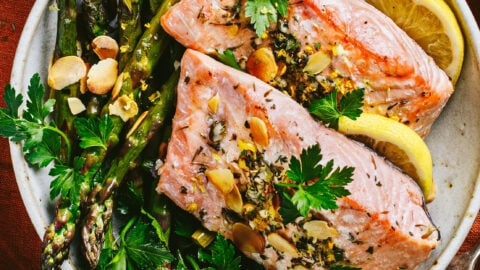

Lemon Herb Salmon with Asparagus
Home

Description
A simple yet elegant dish, this recipe combines tender, flaky salmon with crisp roasted asparagus, all infused with bright citrus and fresh herbs. Seasoned with a zesty lemon-garlic butter then baked or pan-seared to perfection, this dish is light, flavourful, and packed with nutrients. It's an ideal choice for a healthy weeknight dinner or an impressive meal for entertaining guests.
Ingredients
- Salmon
- 2 salmon fillets (about 150g each, skin-on or skinless)
- 1 lemon (zested and juiced
- 2 garlic cloves, minced
- 2 tbsps olive oil or melted butter
- 1 tsp dried or fresh thyme (or a mix of thyme, parsley, and dill
- Salt and black pepper to taste
- Asparagus
- 250g fresh asparagus, trimmed
- 1 tbsp olive oil
- 1/2 tsp garlic powder
- Salt and black pepper to taste
- Optional garnish: lemon slices and chopped fresh parsley

Steps
- Preheat the Oven (if baking)
- Preheat your oven to 200°C (400°F). Line a baking sheet with parchment paper or foil for easy cleanup.
- Prepare the Salmon Marinade
- In a small bowl, whisk together the olive oil or melted butter, lemon zest, lemon juice, minced garlic, thyme, salt, and black pepper.
- Season the Salmon
- Place the salmon fillets on the baking sheet or a plate if pan-searing. Brush the marinade generously over the top and sides of the fillets. Let them marinate for 10-15 minutes while you prepare the asparagus.
- Season the Asparagus
- Place the trimmed asparagus spears on the baking sheet next to the salmon or in a separate section. Drizzle with olive oil, sprinkle with garlic powder, salt, and pepper, and toss to coat evenly.
- Cook the Salmon and Asparagus
- If Baking: Bake the salmon and asparagus in the preheated oven for 12-15 minutes, or until the salmon is opaque and flakes easily with a fork. The asparagus should be tender and slightly crisp.
- If Pan-Searing: Heat a large skillet over medium-high heat. Add a drizzle of oil, place the salmon fillets skin-side down, and cook for 4-5 minutes. Flip the fillets, add the asparagus to the skillet, and cook for another 4-5 minutes, stirring the asparagus occasionally.
- Serve
- Transfer the salmon and asparagus to plates. Garnish with lemon slices and fresh parsley, if desired. Serve immediately and enjoy!